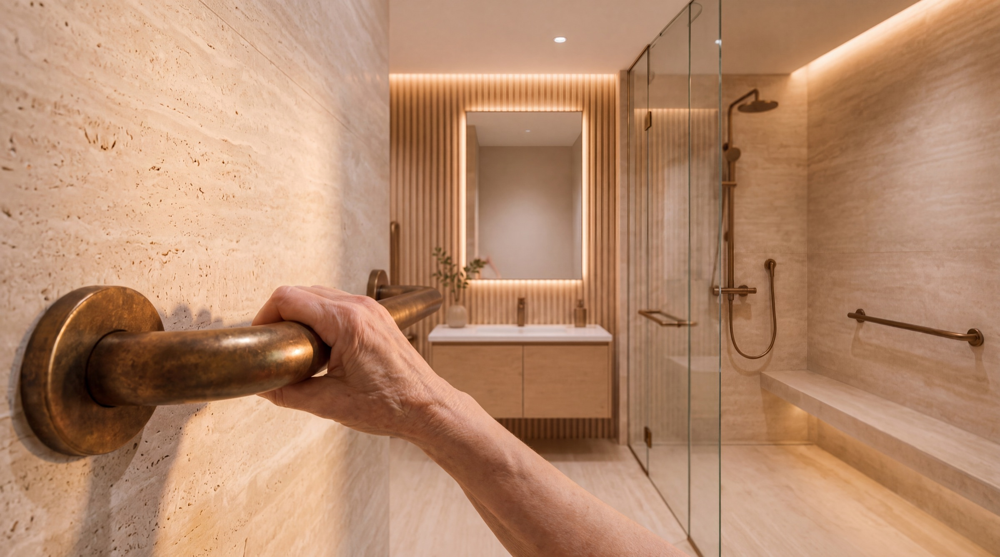

KOSD · Konfor Operating System for Developers
El estándar no se compra. Se cumple.
La certificación como Longevity Infrastructure convierte un proyecto residencial en un nodo de la red. Tres niveles, y cada uno exige el anterior.
Los tres niveles
Son acumulativos, no alternativos.
No se elige uno. Se llega al segundo habiendo cumplido el primero, y al tercero habiendo operado el segundo.
Nivel 1
KONFOR Ready
Qué exige: cumplimiento físico del estándar — accesibilidad, circulaciones para movilidad futura, baños con apoyos integrados al diseño, respaldo eléctrico y seguridad.
Qué habilita: el sello y el listado en la red.
Nivel 2
KONFOR Adapted
Qué exige: doce meses de datos y adopción verificada del perfil longitudinal entre los residentes.
Qué habilita: además del sello, la operación de servicios coordinados dentro del proyecto.
Nivel 3
KONFOR Operated
Qué exige: operación clínica integrada y resultados verificados.
Qué habilita: nodo pleno de la red, con todo lo anterior.
Qué se certifica
Especificación construible, no un folleto.
El estándar se escribe en materiales y cotas.
- Ducha a nivel, sin escalón, con presión regulable.
- Barras de bronce envejecido sobre travertino.
- Piso antideslizante en zonas húmedas.
- Circulaciones y puertas dimensionadas para movilidad futura.
- Alturas de accesorios y cocina al estándar de accesibilidad.
- Planta eléctrica con respaldo.
Nada de eso se ve como un hospital. Esa es justamente la exigencia.
Cómo empieza
Diagnóstico del proyecto.
Revisamos sus planos contra el estándar y le decimos qué falta para Ready. Sin compromiso y sin costo en la primera revisión.
Las condiciones económicas de cualquier vehículo se tratan en privado, bajo acuerdo de confidencialidad y con la documentación que corresponda. Nada en esta página constituye oferta pública de valores.
Al enviar, acepta que le contactemos por el diagnóstico.